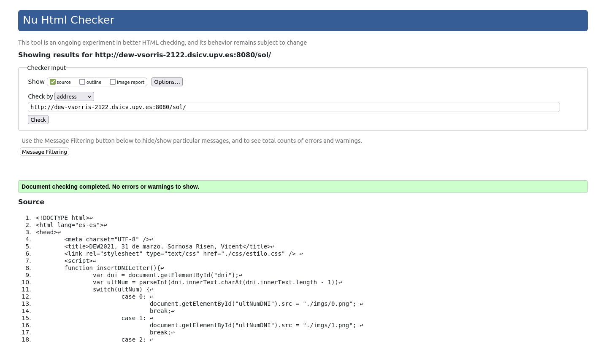

Debes modificar esta página para incluir...
|
Aquí debes añadir un formulario con los siguientes detalles:
http://servidor.dsic.cloud:8080/vnu/submit ejecuta una función yo() que coloca el valor de window.location en la variable de formulario doc<input type="hidden" name="useragent" value="Validator.nu" /> <input type="hidden" name="acceptlanguage" value="" /> <input type="hidden" name="showsource" value="yes" /> <input type="hidden" name="doc" /> <input type="submit" value="Validar" />
Validar debe invocarse el CGI de action devolviendo el diagnóstico correspondiente a esta página que estás construyendo.Una función yo(), que se ha descrito antes, y la inserción del dígito. No es demasiado complicado.
Coloca en una hoja de estilo (estilo.css) externa todas las modificaciones referentes a los elementos de la clase destacar y el borde de la imagen.
El formulario envía la dirección de la página al validador. Haz una captura e inserta la imagen en la propia página.
Tendrás que ...
Debes hacer la captura en el propio navegador (mira en la carpeta Descargas), y referenciar el archivo con una orden img. ¡No olvides incluirlo!
